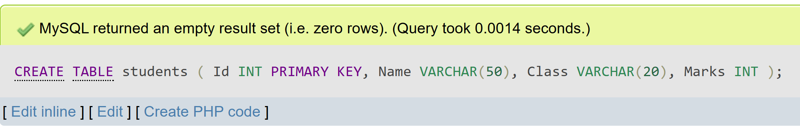
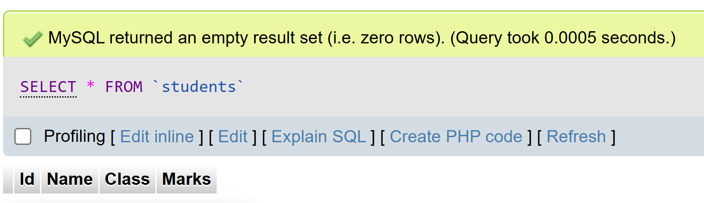
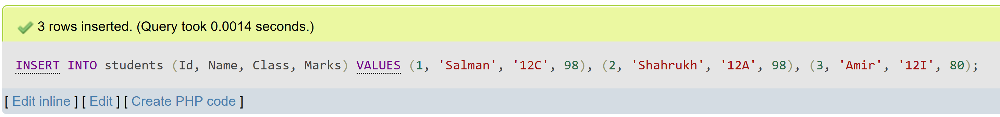
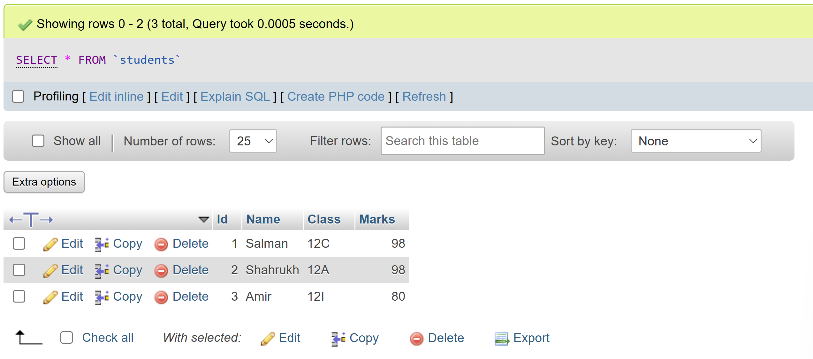
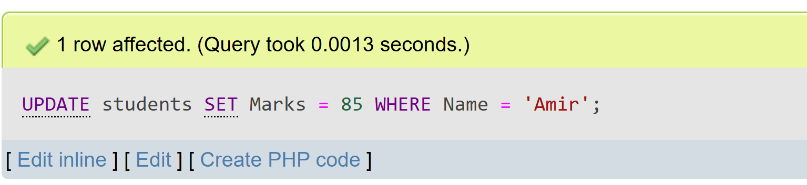
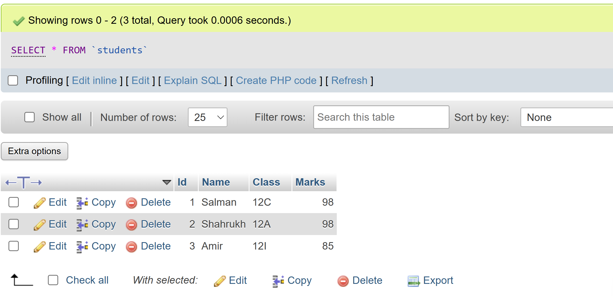
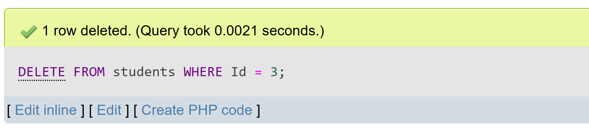
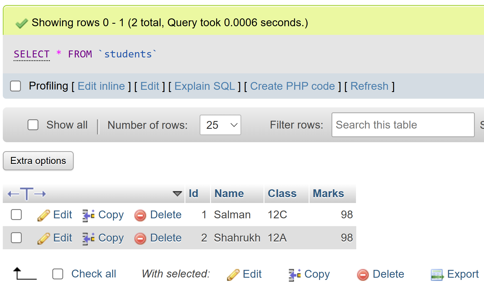

Database Management System
Questions and Answers
1. What is Database and DBMS? List out the advantages and disadvantages of DBMS.
A Database is an organized collection of related, structured data designed for easy access, management, and updating. It stores information systematically to support efficient retrieval and use, such as employee records or sales transactions.
A Database Management System (DBMS) is software that enables users to define, create, maintain, and control access to a database. It serves as an interface between users and the database, ensuring data integrity, security, and efficient multi-user access.
Advantages of DBMS
- Reduces data redundancy by centralizing storage and avoiding duplication.
- Maintains data consistency through enforced integrity rules.
- Enhances security by controlling user permissions and access.
- Supports concurrent access for multiple users without conflict.
- Provides backup and recovery features to protect data against loss.
Disadvantages of DBMS
- High cost for software licenses, hardware, and maintenance.
- Complexity that requires skilled administrators and developers.
- Performance overhead from security and transaction management layers.
- Ongoing maintenance demands, including updates and backups.
2. Differentiate between file processing system and DBMS. Give at least four points.
The file processing system and DBMS differ in several key ways that affect data management and efficiency.
- Data Redundancy: File systems often store duplicate data in multiple places, while DBMS minimizes redundancy through centralized control.
- Data Consistency: File systems struggle to keep data consistent across applications, but DBMS enforces integrity rules to maintain accuracy.
- Security: File systems rely on basic operating system permissions, whereas DBMS provides fine-grained user access controls.
- Query Capability: File systems offer limited or no standardized query language, but DBMS supports flexible, powerful querying with SQL.
3. Explain the different models of DBMS with advantages and disadvantages.
DBMS supports several data models to represent and manage data structures, each with its own strengths and weaknesses.
Hierarchical Model
Organizes data in a tree-like structure with parent-child relationships.
- Advantages: Simple design, efficient for predictable hierarchies.
- Disadvantages: Rigid structure, hard to adapt to changing needs.
Network Model
Represents data as a graph with complex many-to-many relationships.
- Advantages: Greater flexibility than hierarchical models.
- Disadvantages: Complex to design and maintain.
Relational Model
Stores data in tables with rows and columns, using keys to define relationships.
- Advantages: Intuitive design, standardized querying with SQL.
- Disadvantages: Can be slower for highly interconnected data.
Object-Oriented Model
Integrates data and behavior using objects similar to programming concepts.
- Advantages: Better for complex, real-world data structures.
- Disadvantages: Less widely supported, more complex design.
4. What is a relational database? How is it different from other database models?
A relational database organizes data into tables made of rows and columns. Each table has a primary key, and relationships between tables are defined using foreign keys to maintain data integrity.
Unlike hierarchical or network models, which use rigid tree or graph structures, the relational model is more flexible and easier to modify. It supports standardized querying through SQL and enforces strong integrity constraints, making it suitable for a wide range of applications.
5. What is data redundancy? How does DBMS help in reducing it?
Data redundancy refers to the unnecessary duplication of the same data in multiple locations, which can lead to inconsistencies and wasted storage.
A DBMS reduces redundancy by centralizing data storage, applying normalization to split data logically across related tables, and enforcing rules to maintain consistency. This ensures that data is stored once and shared reliably among applications.
6. Write differentiate between centralized and distributed database systems.
Centralized and distributed database systems differ in their structure and management approach.
- Centralized Database: Stores all data at a single location, making it simpler to manage and maintain. However, it can create a single point of failure and may have limited scalability.
- Distributed Database: Stores data across multiple locations or sites, offering better fault tolerance, improved availability, and local autonomy. It is more complex to design and manage, especially in maintaining consistency across sites.
7. Who is Database Administrator (DBA)? What are the major responsibilities of DBA?
A Database Administrator (DBA) is a professional responsible for the installation, configuration, management, and maintenance of database systems. The DBA ensures the database is secure, reliable, and performs efficiently.
Major Responsibilities of DBA
- Designing and maintaining the database schema.
- Managing user access and security permissions.
- Ensuring data integrity and enforcing constraints.
- Performing regular backups and recovery planning.
- Monitoring performance and optimizing queries.
- Troubleshooting issues and maintaining system health.
8. Define normalization. Explain 1NF, 2NF and 3NF with suitable examples.
Normalization is the process of organizing data in a database to reduce redundancy and improve data integrity by dividing large tables into smaller, related ones.
First Normal Form (1NF)
Requires that all columns contain atomic, indivisible values with no repeating groups. Example: Splitting multiple phone numbers stored in one field into separate rows.
Second Normal Form (2NF)
Achieved when the table is in 1NF and all non-key attributes are fully functionally dependent on the entire primary key. Example: Separating student details and course enrollment into different tables to remove partial dependency.
Third Normal Form (3NF)
Requires 2NF and eliminates transitive dependency, where non-key attributes depend on other non-key attributes. Example: Moving department details into a separate table instead of duplicating them in the employee table.
9. Explain the terms: primary key, foreign key, and candidate key with examples.
Primary Key: A field or combination of fields that uniquely identifies each record in a table. Example: StudentID in a Students table.
Foreign Key: A field in one table that references the primary key of another table, creating a relationship between them. Example: CourseID in an Enrollment table linking to Courses.
Candidate Key: Any field or set of fields that can uniquely identify a record. Example: Email or NationalID in an Employee table could be candidate keys.
10. What is SQL? Explain its components and common functions.
SQL (Structured Query Language) is a standard language used to communicate with and manage relational databases. It allows users to define, manipulate, control, and query data efficiently.
Components of SQL
- Data Definition Language (DDL): Commands to define schema and structure (e.g., CREATE, ALTER, DROP).
- Data Manipulation Language (DML): Commands to manipulate data (e.g., SELECT, INSERT, UPDATE, DELETE).
- Data Control Language (DCL): Commands to control access (e.g., GRANT, REVOKE).
- Transaction Control Language (TCL): Commands to manage transactions (e.g., COMMIT, ROLLBACK).
Common SQL Functions
- COUNT(): Counts records in a result set.
- SUM(): Calculates the total of numeric values.
- AVG(): Computes the average value.
- MAX() and MIN(): Find the highest and lowest values.
11. Write SQL commands to perform the following operations:
a. Create a table named students with the fields: Id, Name, Class, and Marks.
CREATE TABLE students (
Id INT PRIMARY KEY,
Name VARCHAR(50),
Class VARCHAR(20),
Marks INT
);


b. Insert records into the students table with appropriate values.
INSERT INTO students (Id, Name, Class, Marks) VALUES
(1, 'Salman', '12C', 98),
(2, 'Shahrukh', '12A', 98),
(3, 'Amir', '12I', 80);

c. Display all records from the students table.
SELECT * FROM students;

d. Update the marks of a student whose name is 'Anita' to 85.
UPDATE students
SET Marks = 85
WHERE Name = 'Anita';


e. Delete the record of the student with id = 3.
DELETE FROM students
WHERE Id = 3;


12. Define the following terms.
a. Data Dictionary
A data dictionary is a centralized repository that contains metadata about the database, including definitions of tables, columns, data types, constraints, and relationships. It helps developers and administrators understand the structure and rules of the database.
b. Primary Key
A primary key is a field or combination of fields in a table that uniquely identifies each record. It ensures that no two records have the same value in this field, supporting data integrity. Example: StudentID in a Students table.
c. Relationship
A relationship is an association between tables in a database that defines how data in one table relates to data in another. Common types include one-to-one, one-to-many, and many-to-many relationships, often enforced through foreign keys.
d. Data Manipulation Language (DML)
Data Manipulation Language (DML) is a subset of SQL used to retrieve and modify data in a database. It includes commands like SELECT, INSERT, UPDATE, and DELETE to manage the contents of tables.
e. Structured Query Language (SQL)
Structured Query Language (SQL) is the standard language for interacting with relational databases. It allows users to define, manipulate, control, and query data through commands such as SELECT, INSERT, UPDATE, and DELETE.
f. Data Integrity
Data integrity refers to the accuracy, consistency, and reliability of data throughout its lifecycle. It is maintained through constraints, validation rules, and relationships that prevent invalid or contradictory data entries.
g. Data Definition Language (DDL)
Data Definition Language (DDL) is a subset of SQL used to define and manage the structure of database objects. It includes commands like CREATE, ALTER, and DROP to set up tables, schemas, and relationships.
h. Data Security
Data security involves protecting data from unauthorized access, breaches, or corruption. It includes measures such as user authentication, access controls, encryption, and regular backups to safeguard sensitive information.
i. Database System
A database system is the complete environment that includes the database itself, the Database Management System (DBMS), related applications, and users. It manages the storage, retrieval, and manipulation of data in an organized and controlled manner.